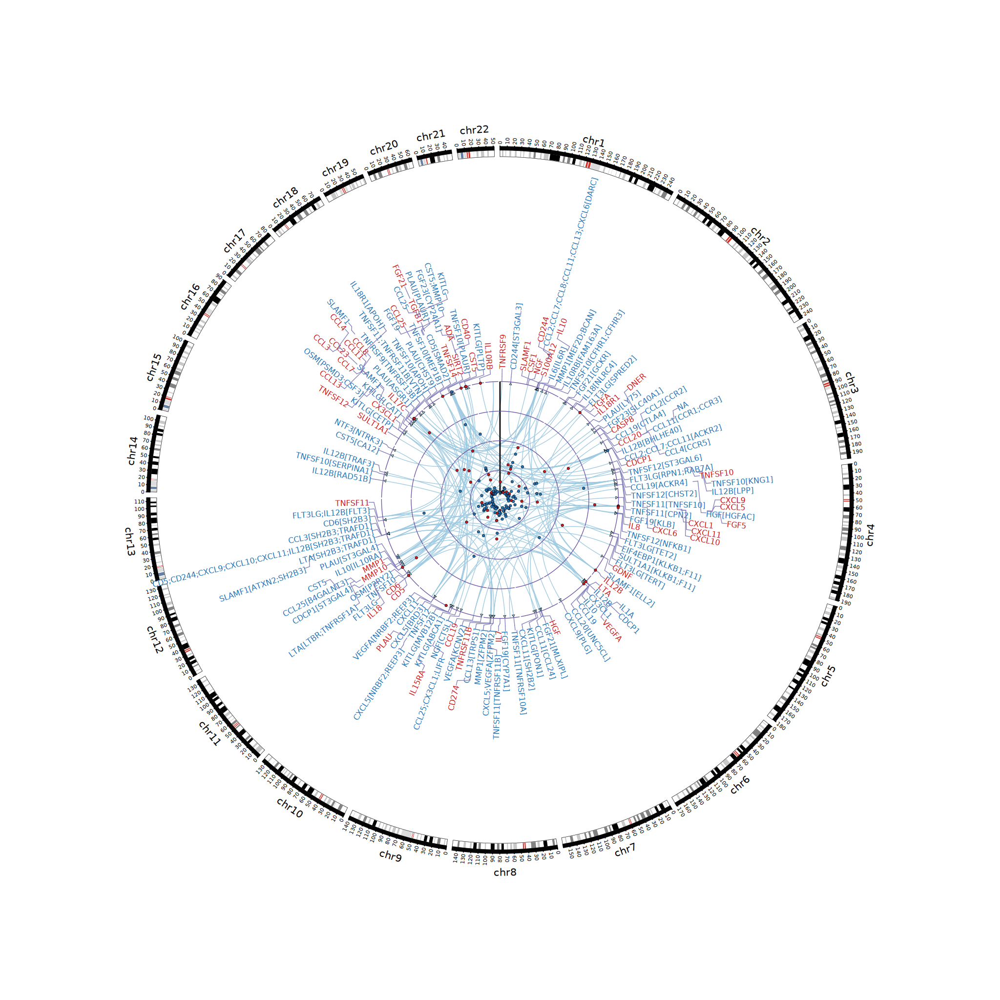

SCALLOP-INF meta-analysis

Flow of analysis
(When the diagram is not rendered, view it from Mermaid live editor)
Comments
The tryggve, cardio and csd3 directories here are associated with the named Linux cluster(s) used for the analysis over time.
-
Data pre-processing was done initially from tryggve with list.sh and format.sh, followed by meta-analysis according to metal.sh using METAL whose results were cross-examined with QCGWAS.sh together with additional investigation.
-
The main analysis followed with analysis.sh containing codes for Manhattan/Q-Q/forest/LocusZoom plots such as the OPG example (see the diagram below), which replicated results of Kwan et al. (2014) as identified by PhenoScanner), clumping using PLINK and conditional analysis using GCTA. The clumping results were classified into cis/trans signals. As the meta-analysis stabilised especially with INTERVAL reference, analysis has been intensively done locally with cardio and csd3. cis/trans classification has been done via cis.vs.trans.classification.R as validated by cistrans.sh.
-
We prototyped our analysis on cardio with INTERVAL such as INTERVAL.sh and cardio.sh as well as individual level data analysis for the KORA study. Most analyses were done locally on CSD3.
-
The
cis.vs.trans.classification,circos.cis.vs.trans.plotas withcs,log10p,logp,gc.lambda,invnormal,METAL_forestplot,mhtplot.trunc,mhtplot2d,pvaluefunctions are now part of R/gap at CRAN and updates such aspqtl2dplot/pqtl2dplotly/pqtl3dplotlyare made at GitHub. Some aspects of the downstream analyses links colocalisation and Mendelian randomisation are also available from gap vignette and pQTLtools articles. A nested predictive model based on genotype data G, which link with proteins P1, P2, ..., Pn as predictors for outcome y. Alternative routes are T(P)WAS with fusion_twas and EWAS with EWAS-fusion.
The OPG example
This proves to be a positive control. The stacked image below shows Manhattan, Q-Q, forest and LocusZoom plots.

EWAS with IL-12B
(EWAS, joint/conditional) Q-Q and Manhattan plots from ewas-plot.R.

Summary statistics
The link will be added here when available.
Related links
- OlinkAnalyze
- Olink Insights Stat Analysis
- SCALLOP consortium.
- Olink location, What is NPX, F2F London meeting, Data Science Workshop 2019.
- GitHub repository for the 2017 PLoS Genetics paper above.
- securecloud.
- Olink publications.
- SomaLogic plasma protein GWAS summary statistics.
- Aging Plasma Proteome (DEswan).
- ImmunoBase.
- Worldwide PDB
References
Choi SW, Mak TS, O'Reilly PF Tutorial: a guide to performing polygenic risk score analyses. Nat Protoc 15, 2759-2772 (2020), GitHub documentation.
Folkersen L, et al. (2017). Mapping of 79 loci for 83 plasma protein biomarkers in cardiovascular disease. PLoS Genetics 13(4), doi.org/10.1371/journal.pgen.1006706.
Kwan JSH, et al. (2014). Meta-analysis of genome-wide association studies identifies two loci associated with circulating osteoprotegerin levels. Hum Mol Genet 23(24): 6684–6693.
Niewczas MA, et al. (2019). A signature of circulating inflammatory proteins and development of end-stage renal disease in diabetes. Nat Med. https://doi.org/10.1038/s41591-019-0415-5
Sun BB, et al. (2018). Genomic atlas of the human plasma proteome. Nature 558: 73–79.